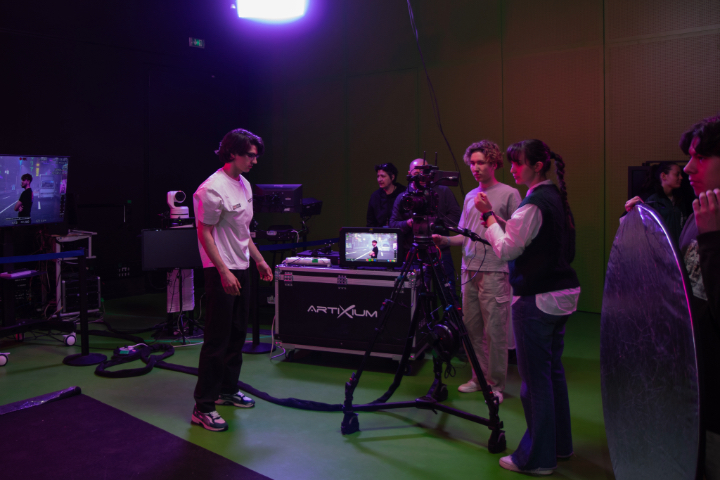
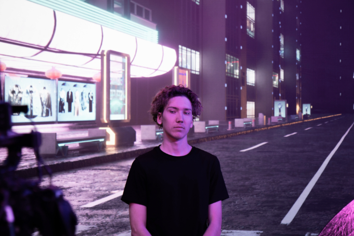

Présentation
Agence fictive, décor réel.
Osmo Create est une agence fictive d'audiovisuel créée par un groupe d'étudiants. Pour la promouvoir, nous avons réalisé un teaser présentant les membres de l'agence. Le tournage s'est déroulé dans les locaux de Télomédia, plateforme audiovisuelle basée à Toulon.

Mon rôle
Cadrage & présence à l'écran.
J'ai cadré plusieurs plans : plans de la caméra principale et plans d'insert. Je figure également dans le teaser en tant que membre de l'agence.

Matériel & outils
Écran LED + Unreal Engine.
Tournage devant un grand écran LED affichant en temps réel un décor 3D photoréaliste généré par Unreal Engine. Une caméra avec système de tracking envoie ses mouvements au moteur de rendu — le décor s'adapte en temps réel à la perspective, créant une illusion de profondeur très crédible. Plans additionnels avec caméra, montage sur Premiere Pro et After Effects.

Résultat